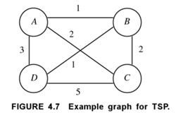

Professor Abdul-Quader
Algorithm Design / Concurrency
How do we sort \(10\) elements that are all between \(1\) and \(999\)? Two ideas:
Important: each step must be stable.
Exercise: try this out on 125, 111, 061, 209, 290, 095.
Consider an \(n\) by \(n\) matrix \(M\), whose rows and columns are each sorted in increasing order. That is, the elements of each row increase as you go left to right, and the elements of each column increase as you go down. Determine if a number \(x\) is in the matrix in \(O(n)\) comparisons.
Mini-unit on “types of algorithms”:
Greedy algorithm: attempts to find a solution to a problem by making choices that are locally optimal.
Hope: you find the globally optimal solution.
Often times: the greedy solution is not always globally optimal (in fact, it can sometimes produce the worst possible output).

(Basu, Design Methods and Analysis of Algorithms). Greedy solution starting at \(A\)? Correct solution starting at \(A\)?
(General) Problem: given a set of coin denominations \(\{ c_1 > c_2 > \ldots > c_n \}\), and a value \(x\), find the least number of coins needed to add up to \(x\).
Claim: standard coin denominations: \(\{ 1, 5, 10, 25 \}\): greedy algorithm produces an optimal colleciton of coins. (Proof is not hard, but is not very interesting. Look at all the cases for everything below \(24\).)
Exercise: show what the greedy algorithm outputs with this set of denominations and \(x = 37\). Then we will describe the algorithm generally.
The greedy algorithm fails for more general sets of coin denominations! Can you find a counterexample where the set of denominations is \(\{ 1, 15, 20 \}\)?
Most of the algorithms we have seen have been offline. An offline algorithm is one which requires that the entire input be given all at once. In contrast, an online algorithm can only process its input one at a time.
In general, an online algorithm might not necessarily produce an optimal result.
Given a list of candidates for a job opening, you wish to hire the best one.
(Sometimes referred to as the “Marriage” problem.)
Discuss a potential hiring strategy. Suppose that there are 10 candidates and you can unambiguously rank them (if you were able to see them all). What strategy will optimize the probability that you hire the best candidate?
Concurrency: multiple threads doing work at the same exact time. Questions:
Take a look at the
Increment.java program.
NUM_THREADS * NUM_INCREMENTS.Not just one instruction! Actually: